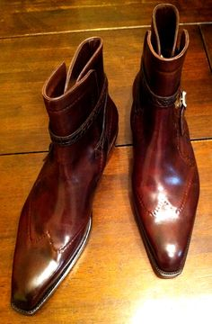

발등을 덮지 않는 짚신·샌들 등과 같은 개방형 신과 구별한다. 신은 표본으로 남아 있기가 어렵고 맨발의 역사도 의외로 길기 때문에 구두의 기원에 대해서는 분명하지 않다. 그러나 고대 이집트·그리스·로마 시대의 신의 주류가 샌들이었다는 것은 분명하고, 샌들 후에 구두가 나타났다는 사실은 헤게소의 묘비(BC 5세기)나 테베왕(王)의 분묘(BC 4세기)의 그림을 보아 알 수 있다. 샌들은 발바닥의 보호만을 목적으로 하는 신으로 발바닥에 대는 부분을 끈이나 밴드로 발등이나 뒤꿈치 등에 고정시킨다. 현재 보존되어 있는 신 중에서 가장 오래 된 것은 BC 2000년경 고대 이집트에서 만들어진 것이다.당시 샌들을 만들었던 재료는 가죽이나 파피루스 등인데, 이의 착용이 허용된 사람은 귀족·승려·전사(戰士) 들이었고 서민들은 맨발로 다녔다. 그리스·로마 시대가 되자 일반시민들도 샌들을 신을 수가 있었다. 샌들을 발에 고정시키는 방법에는 엄지발가락과 둘째발가락 사이에 끼우는 방식과 가로로 고정시키는 밴드식(式)이 있다. 샌들은 난국성(暖國性) 신이라고도 하며, 이의 분포는 열대·아열대 지방에 널리 퍼져 있다.
